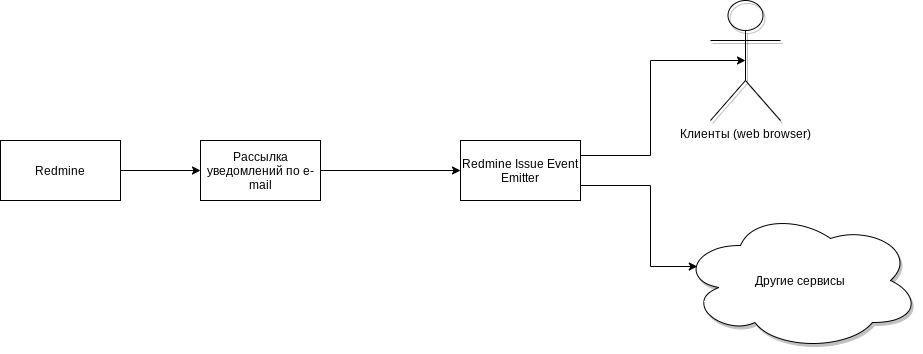
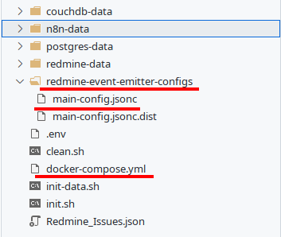

Hello world It's me SNAILk
Created by Maria Safinart and Pavel Gnedov
Презентация
- Расскажу как всё хорошо
- Расскажу как всё плохо! Ха-ха-ха
🐟
🐳

🐟

Почему вообще появилась эта тема? Год назад реализовал альтернативное представление для задач в виде kanban доски
основанной на API Redmine. Для получения информации для каждой карточки выполнялся запрос данных в формате json.
Hello world.
Redmine для работы
- Разрабатываю в Eltex проект ECCM
- Работаю с Redmine 5-6 лет
- Работал так же с Jira и с YouTrack
Боль
- Я не знаю чем сейчас занимаюсь
- Не знаю что делать дальше
- Не знаю чем занимаются коллеги
- Нет желания работать с задачами в Redmine
- Я не знаю что происходит с проектом
- В уведомлениях email не ясно какие важные, а какие нет
Почему этот доклад?
Что если?
Redmine Issue Event Emitter
Конфиг для docker-compose
docker-compose.yml
version: '3.1'
services:
redmine-event-emitter:
image: ghcr.io/pavel-g/redmine-issue-event-emitter:latest
restart: always
ports:
- 8381:3000
volumes:
- ./redmine-event-emitter-configs:/app/configs
Конфигурационный файл main-config.jsonc
{
"mailListener": {
"issueNumberParser": "\\b(?<=#)\\d+\\b",
"imapSimpleConfig": {
"imap": {
"user": "email_login",
"password": "email_password",
"host": "mail.example.org",
"port": 143,
// tls: true,
"autotls": "always",
"authTimeout": 5000
}
},
"updateInterval": 180000, // 3 min
"boxName": "INBOX.Redmine"
},
"issueChangesQueue": {
"updateInterval": 15000, // 15 sec
"itemsLimit": 3
},
"redmineUrlPrefix": "http://redmine.example.org",
"webhooks": [
{
"url": "https://n8n.example.org/webhook/",
"apiKeyName": "",
"apiKeyValue": ""
}
]
}
Получившаяся структура папок
Запуск event-emitter
docker-compose up -d